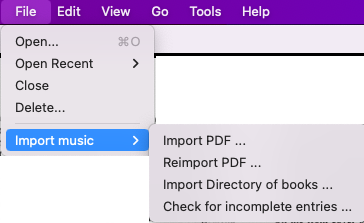
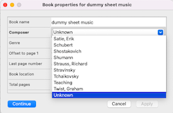
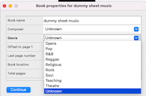
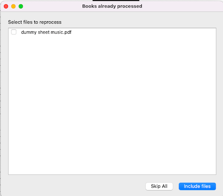
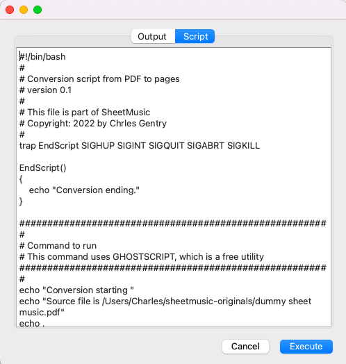
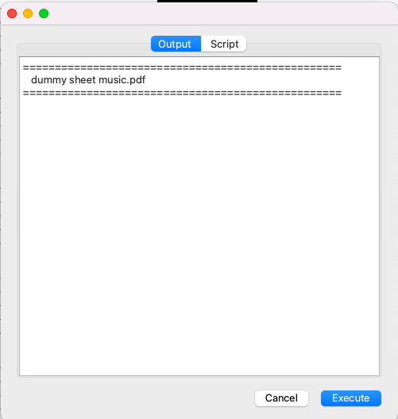

The imput source for music books is PDFs in a standard format. The documents are imported page-by-page into the sheetmusic directory. The standard page format is a PNG, but other can be set in the preferences panel.
Currently there is no facility to mark up the final pages displayed. If you want to mark them with playing notes, you can annotate the original PDFs and reimport the documents into the system.
PDF documents must be reformatted for use in the system. The process is to select the file(s) from the system, give them a name and fill any information available, then start the process. The default program used is ghostscript, which will read each page and write them out to the sheetmusic directory.
From the File menu, select

A file selection dialog will open to allow you to select multiple files from the system. You will be prompted to enter the information about the PDF. The name of the document and total number of pages is read from the PDF file. This feature will only happen if you have installed PyPDF2. If this is not present, you will need to fill out the fields yourself.


If any of the files have been imported before, you will be prompted to confirm the selection before proceeding.
Select all files to be reproccessed, then select Include Files. If you don't want to reprocess any files,
select Skip All.

Before processing every file, you will also be shown the script and output pane. The Script panel will show you
what is going to be executed. You can edit the scipt if you want to make little 'tweeks' to it. The original
source is in the Preferences Script panel.

When you hit Execute the script will run and the output
will be shown in the Output tab.

Ghostscript is an open source program that can be installed easily in your system. (Some systems come with it on installation.) The SheetMusic program will run a script to convert the PDF and display the progress to you. The script can be altered, along with the parameters passed to the program. The script that comes with the program has been tested only on a Mac system, but will be tested on additonal systems as it nears completion.
Once a document has been imported into the system, you can re-import it quite easily. You only need to select File->Import...->Reimport and select the previously imported document into the system. The previous document will be completly deleted but the bookmarks will be re-loaded once the process is complete.
Re-importing a document allows you to mark up the PDF and bring those changes back into the system with very little effort. If you add pages, however, the bookmarks you set will not be correct. You will need to delete the bookmarks that are wrong or delete all the bookmarks for the book.